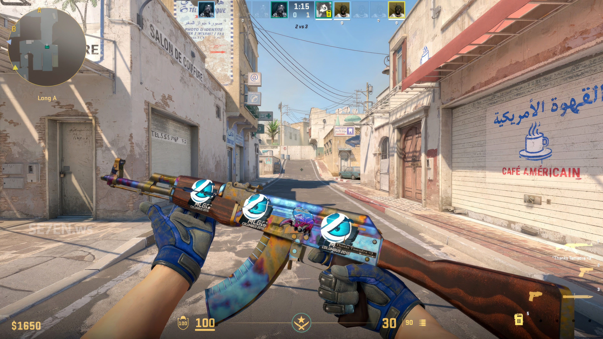

Перейти на другую страницу
Навигация по странице
CS 2
Counter strike 2 Как и предыдущие игры серии, Counter-Strike 2 — это многопользовательский тактический шутер от первого лица, в котором две команды соревнуются за выполнение различных задач в зависимости от выбранного режима игры. Игроки делятся на две команды: контртеррористы и террористы[3][4]. Каждый игровой режим имеет разные цели и разделён на несколько раундов, а в перерывах между раундами игрок может приобрести различное оружие и снаряжение для использования. В большинстве игровых режимов у игрока есть одна жизнь на раунд, что приведёт к тому, что он не сможет играть до окончания раунда, если умрёт. В игре есть шесть различных игровых режимов, в которых игроки могут соревноваться: соревновательный, премьер-режим, обычный, напарники, бой насмерть, гонка вооружений[3][5].
Соревновательный, основной режим игры, ставит две команды по пять человек (то есть 5 на 5) друг против друга, при этом цель террористов состоит в том, чтобы установить взрывчатку C4 в одном из двух мест взрыва на карте или убить всех контртеррористов, а цель контртеррористов заключается в том, чтобы либо убить всех террористов, либо обезвредить взрывчатку. Выполнив свои задачи, команда выиграет свой раунд и наберёт очко. В отличие от Counter-Strike: Global Offensive, игра в этом режиме заканчивается если одна из сторон зарабатывает 13 очков, тогда эта сторона считается выигравшей[6]. В случае, если обе стороны заработали по 12 очков, то игра продолжается до достижения 16 очков[7]. Если же обе команды в таком случае набирают по 15 очков, то объявляется ничья. В Counter-Strike 2 разработчики отказались от кругового меню покупки оружия из Global Offensive. Вместо него в игре появилось новое плоское меню, ключевой особенностью которого является возможность продажи купленного оружия[8]. В новом меню появилась возможность изменять положение оружия, что потенциально может помочь сделать покупку оружия быстрее[8].
It was revealed on March 23, 2022, initially inspired by Death Stranding with the aim to create a post-apocalyptic world where players can experience the fusion of new and old civilizations. The game development also draws inspiration from various sources, including Punishing: Gray Raven for its combat mechanics, as well as the Pokémon games for its echo system. Wuthering Waves has been compared to other titles of the genre such as Genshin Impact, but aims to place greater emphasis on its combat system compared to its predecessors.
Противники
- Террористы
- Спецназ
Characteristics of main character - Rover
| Раса | Человек |
| Пол | Мужской |
| Возраст | Неопределён |
| Силы | Использует оружие |